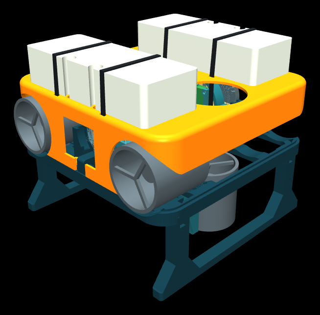

V5 MuJoCo仿真
这是与V5 CAD坐标对应的四推进器刚体仿真，提供运动、控制分配和相机视角的开发起点。使用当前交付的STL外观网格，另有简化碰撞体；不把STL网格当作水动力模型。
运行
推荐Python 3.11/3.12虚拟环境，安装项目根目录的requirements/sim.txt，例如：
python3 -m venv .venv
source .venv/bin/activate
python -m pip install -r requirements/sim.txt
python simulation/mujoco/verify.py
python simulation/mujoco/run.py --render
macOS推荐双击根目录的launch-macos.command（默认键盘驾驶、120秒），或在已安装依赖的Python环境中运行：
python simulation/mujoco/launch_macos.py --manual --seconds 120
键盘驾驶使用独立GLFW窗口，在普通Python主线程上运行，不加载mujoco.viewer的Simulate热键。自动演示仍可使用下方mjpython；自动演示启动器按需补齐当前虚拟环境的libpython动态库链接，不修改系统Python或shell配置。
直接使用mjpython也可以：
mjpython simulation/mujoco/run.py --viewer --seconds 120
其他平台可使用python simulation/mujoco/run.py --viewer。直接运行run.py默认是定深、升降、前进和转向的自动演示；加--manual --viewer启用键盘驾驶。根目录Mac启动脚本默认启用键盘驾驶。不含已连接的游戏手柄或真实机器人控制固件。--render在无交互窗口下生成每次runs/输出目录中的录像、CSV和视图。
请通过run.py运行。 外加浮力、阻力和电机滞后在environment.py中实现。单独把XML拖进通用MuJoCo查看器只有模型、重力和接触，缺少这些水下外力。
控制接口
from environment import ROV
e = ROV()
# 期望：前后力N、升降力N、横滚力矩Nm、偏航力矩Nm
u = e.allocate(surge_N=2, heave_N=0, roll_Nm=0, yaw_Nm=0)
e.step(u)
# 或使用示例控制器：目标深度m、前后力N、目标航向rad
u = e.controller(depth=1.2, surge_N=2, yaw=0.5)
e.step(u)
把simulation/mujoco/加入Python路径或在该目录导入。step输入顺序为H_LEFT, H_RIGHT, V_LEFT, V_RIGHT，单位是牛顿，不是PWM或转速。位置X向前、Y向左、Z向上，深度为−z；左右竖推正力均定义为向上。实际电机旋向、桨型与电调指令到正力的对应关系需要实测标定。
完整6×4推力分配矩阵及参考点在simulation/mujoco/ACTUATOR_MAP.json，四个受控量为Fx/Fz/Mx/Mz。俯仰和横移没有独立执行输入；仿真保留被动浮力恢复力矩及耦合，不能把它当六自由度全驱动机。
相机网格按真实装配绕光轴旋转180°以避让USB；XML的front_camera代表将原始图像旋转180°后的正向视图。相机采用针孔视角，没有折射、浑浊、散射、镜头畸变或图像算法。MuJoCo的理想姿态/速度状态不等于真实IMU、深度传感器或视觉定位估计。
假设与校准
config.json全部assumed_字段均为可编辑假设：质量1.4kg、重心Z5mm、浮心Z35mm、惯量、排水体积、线性/二次阻力、角阻力、0.12秒电机滞后及反扭矩。1.4kg不是载具额定重量或已称重值。默认排水体积被设成在997kg/m³水密度下比该质量略正浮力1%，不是从CAD或浮材实测得到。
前向20.59N仅取厂家X2最大推力宣称作上限参考；反向10N是待测占位值，不是厂家给出的性能。实机需要测正反推力曲线、连续推力、死区、饱和、响应时间，再替换参数。
本环境只覆盖完全浸没、静水、远离水面的条件，没有自由液面、水面穿越、波浪、附加质量、推进器互扰/喷流、系缆力、推进器故障模型或CFD。MuJoCo内置流体选项设为零，避免与Python阻力重复计算。靠近水面时程序会明确报错，不能把该模型用于出入水预测。
验证范围
simulation/mujoco/verify.py检查：XML实际推进器力/矩与CAD推力分配矩阵一致；分配矩阵秩为4；前后、上下、偏航、横滚的响应方向；假设参数下20秒定深、深度阶跃与横滚恢复。结果在SIMULATION_CHECKS.json。
通过这些检查表示软件模型在列出的假设下能运行、符号和控制接口一致；不证明实机性能、结构强度、密封或潜深。得到真实称重、配平、推力和阻力数据后，应重新标定，再用相同测试作回归。
重建CAD后运行：
python simulation/mujoco/build_model.py
python simulation/mujoco/verify.py
python simulation/mujoco/run.py --render
构建器会把CAD参数和网格清单的SHA256写入执行器映射，便于发现CAD与仿真版本不一致。官方接口参考：MuJoCo XML、ArduSub布局。
Mac动态库错误
若出现Library not loaded: @executable_path/../lib/libpython3.12.dylib，使用上面的launch_macos.py启动；这是mjpython与uv虚拟环境的动态库路径兼容问题，不是CAD/XML加载失败。参考MuJoCo官方问题记录。
启动脚本优先选择工程内.venv，其次是已激活的VIRTUAL_ENV，最后选择PATH中的python3；搬到另一台电脑需先按本文安装依赖。根目录Mac启动脚本默认是键盘驾驶；直接运行run.py默认是自动演示。不支持手柄驾驶。

键盘驾驶
关闭旧窗口再启动更新后的launch-macos.command。或者：
python simulation/mujoco/launch_macos.py --manual --seconds 300
先点击仿真画面，让它获得键盘焦点。按住W/S设置前后合力为+2/-2牛顿，松开后归零；A/D每次改变航向目标左/右15°；U/J每次改变深度目标上/下0.1米；X取消前后推力，并保持按下当时的深度和航向。W/S不再锁存；松开按键或窗口失去焦点就取消前后推力。A/D和U/J每次按下调整目标，松键后保持该目标。X不是水平位置锁定，也不是立即刹停。横移和俯仰不可独立控制。
深度目标限在0.35–2.5米，保持完全浸没并远离池底。窗口左上角显示目标/实际深度、推力、航向目标和世界坐标；镜头会跟随机器人，移动时主要观察地砖和X/Y位置。驾驶窗口完全由desktop_viewer.py处理键盘事件，不经过MuJoCo查看器热键，因此W不会切换线框，S不会切换阴影；不再逐帧恢复显示状态。ESC关闭窗口，鼠标左键拖动旋转视角，滚轮缩放。
simulation/mujoco/verify_manual.py验证6个方向的键盘目标经现有控制器产生正确运动、X保持目标和深度目标限幅；结果见MANUAL_CONTROL_CHECKS.json。窗口驾驶记录保存到runs/每次运行目录/manual_states.csv，普通窗口演示保存到runs/每次运行目录/viewer_states.csv；离线渲染在本次输出目录使用demo_states.csv。
水环境与算法选择
当前水环境为完全浸没、静水中的浮力/阻力近似；默认密度997kg/m³，并非海浪或海流仿真。蓝色平面和地砖是视觉参考，不是流体网格。可用明确的海水密度假设重新设置config.json并重建模型，但仅改密度不会得到波浪、涌流、喷流互扰或盐水腐蚀模型。所有水动力参数均待实测标定。
当前controller是经典比例/微分反馈加净浮力前馈，控制深度、横滚和航向；前后输入为合力命令，尚不是闭环速度控制。建议先用经典控制完成定深、定向、配平和推力标定，再比较学习策略。
可以在现有ROV物理接口外封装Gymnasium环境，研究连续动作的PPO或SAC。当前交付尚未包含Gymnasium封装、奖励、训练脚本或训练好的策略。建议首个任务为定深+定向，观察量为误差、姿态、速度/角速度和上一时刻动作；动作可选四台归一化推力，或在现有经典控制器上添加有限幅值的残差；奖励兼顾跟踪误差、姿态、动作变化和控制成本。需明确终止条件及独立评估集，对质量、浮力、阻力、推力偏差、响应延迟和传感噪声进行合理随机化；未经标定的单一理想环境不能证明策略能迁移到实机。
参考：Gymnasium自定义环境、SB3强化学习实践与评估。
热键修复验证：python simulation/mujoco/verify_driving_window.py创建本机OpenGL窗口，直接检查按下/释放/失焦回调不改变显示标志、运动方向与帧缓冲渲染，记录到DRIVING_WINDOW_CHECKS.json。该测试不是操作系统键盘事件注入；新窗口未使用原查看器热键代码。
实机制造见实机落地路线。